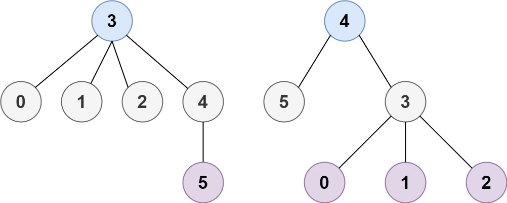

310. 最小高度树
| 题目信息 | 内容 |
|---|---|
| 难度 | 中等 |
| 核心模式 | 拓扑剥离（逐层删除叶子节点），最后剩下的 1~2 个节点即答案 |
| 时间复杂度 | O(n) |
| 空间复杂度 | O(n) |
题目与约束
树是一个无向图，其中任何两个顶点只通过一条路径连接。 换句话说，任何一个没有简单环路的连通图都是一棵树。
给你一棵包含 n 个节点的树，标记为 0 到 n - 1 。给定数字 n 和一个有 n - 1 条无向边的 edges 列表（每一个边都是一对标签），其中 edges[i] = [ai, bi] 表示树中节点 ai 和 bi 之间存在一条无向边。
可选择树中任何一个节点作为根。当选择节点 x 作为根节点时，设结果树的高度为 h 。在所有可能的树中，具有最小高度的树（即，min(h)）被称为 最小高度树 。
请你找到所有的 最小高度树 并按 任意顺序 返回它们的根节点标签列表。
树的 高度 是指根节点和叶子节点之间最长向下路径上边的数量。
示例 1：

输入：n = 4, edges = [[1,0],[1,2],[1,3]]
输出：[1]
解释：如图所示，当根是标签为 1 的节点时，树的高度是 1 ，这是唯一的最小高度树。
示例 2：

输入：n = 6, edges = [[3,0],[3,1],[3,2],[3,4],[5,4]]
输出：[3,4]
提示：
-
1 <= n <= 2 * 104 -
edges.length == n - 1 -
0 <= ai, bi < n -
ai != bi -
所有
(ai, bi)互不相同 -
给定的输入 保证 是一棵树，并且 不会有重复的边
核心不变量
最小高度树的根一定在整棵树的“中心”附近：不断把当前所有度为 1 的叶子剥掉，最后剩下的 1 个或 2 个节点就是所有最小高度树的根。
完整推导
思路推导
-
从直径看问题：一棵树的高度由它最长路径（直径）决定。把根放在直径的中点上，能让到两端的最远距离尽量小，所以最小高度树的根必然在直径中心。直径长度为偶数时中心是 1 个节点，为奇数时是 2 个相邻节点。
-
不真去求直径的做法：与其找直径，不如“从外向内一层层剥叶子”。这等价于同时从直径两端向中间收缩，最后停下的位置就是中心。
-
小例子（示例 2）：
edges = [[3,0],[3,1],[3,2],[3,4],[5,4]]。度为 1 的叶子是0,1,2,5；剥掉后3的度变为 1、4的度变为 1（3-4相连）；再剥一轮后只剩3、4两个节点 → 答案[3,4]。 -
为什么最后剩 1 或 2 个：每一步至少删掉一层叶子，树规模严格减小；当剩余节点数
<= 2时它们就是中心，无需再删。
Java 实现（拓扑剥离 / BFS 删叶）
import java.util.ArrayList;
import java.util.LinkedList;
import java.util.List;
import java.util.Queue;
class Solution {
public List<Integer> findMinHeightTrees(int n, int[][] edges) {
List<Integer> res = new ArrayList<>();
if (n == 1) {
res.add(0); // 只有一个节点，它就是唯一答案
return res;
}
List<List<Integer>> g = new ArrayList<>();
for (int i = 0; i < n; i++) g.add(new ArrayList<>());
int[] deg = new int[n];
for (int[] e : edges) {
g.get(e[0]).add(e[1]);
g.get(e[1]).add(e[0]);
deg[e[0]]++;
deg[e[1]]++;
}
Queue<Integer> queue = new LinkedList<>();
for (int i = 0; i < n; i++) {
if (deg[i] == 1) queue.offer(i); // 初始叶子入队
}
int remaining = n;
while (remaining > 2) {
int size = queue.size();
remaining -= size; // 这一层叶子即将被删除
for (int i = 0; i < size; i++) {
int leaf = queue.poll();
for (int nb : g.get(leaf)) {
if (--deg[nb] == 1) { // 邻居度减一，若变叶子则入队
queue.offer(nb);
}
}
}
}
while (!queue.isEmpty()) res.add(queue.poll());
return res;
}
}
复杂度
- 时间：O(n)，每条边被访问常数次，每个节点最多入队/出队一次。
- 空间：O(n)，邻接表、度数组与队列均为线性规模。
易错点与扩展（面试高频考点）
n == 1特判：此时没有边，直接返回[0]，否则度数组为空会出错。- 删除时机：每轮只删除“当前这一层”的叶子，用
size = queue.size()固定本层数量，避免把新产生的叶子混进本轮。 - 不用真的修改图：只需把邻居的度
--，度降到 1 就视为新叶子，无需删边。 - 为什么答案最多两个：直径中心的性质决定；若返回超过 2 个，说明剥离层数判断有误。
- 扩展：也可两次 BFS/DFS 求出直径再取中点；两者复杂度同为 O(n)，但删叶法更直观、常数更小。
力扣原题
C++ 实现
class Solution {
public:
vector<int> findMinHeightTrees(int n, vector<vector<int>>& edges) {
if (n == 1) return {0};
vector<vector<int>> g(n);
vector<int> deg(n, 0);
for (auto& e : edges) {
g[e[0]].push_back(e[1]);
g[e[1]].push_back(e[0]);
deg[e[0]]++;
deg[e[1]]++;
}
queue<int> q;
for (int i = 0; i < n; i++) {
if (deg[i] == 1) q.push(i);
}
int remaining = n;
while (remaining > 2) {
int sz = q.size();
remaining -= sz;
for (int i = 0; i < sz; i++) {
int leaf = q.front();
q.pop();
for (int nb : g[leaf]) {
if (--deg[nb] == 1) q.push(nb);
}
}
}
vector<int> res;
while (!q.empty()) {
res.push_back(q.front());
q.pop();
}
return res;
}
};
Python 实现
class Solution:
def findMinHeightTrees(self, n: int, edges: List[List[int]]) -> List[int]:
if n == 1:
return [0]
g = [[] for _ in range(n)]
deg = [0] * n
for a, b in edges:
g[a].append(b)
g[b].append(a)
deg[a] += 1
deg[b] += 1
leaves = [i for i in range(n) if deg[i] == 1]
remaining = n
while remaining > 2:
remaining -= len(leaves)
new_leaves = []
for leaf in leaves:
for nb in g[leaf]:
deg[nb] -= 1
if deg[nb] == 1:
new_leaves.append(nb)
leaves = new_leaves
return leaves